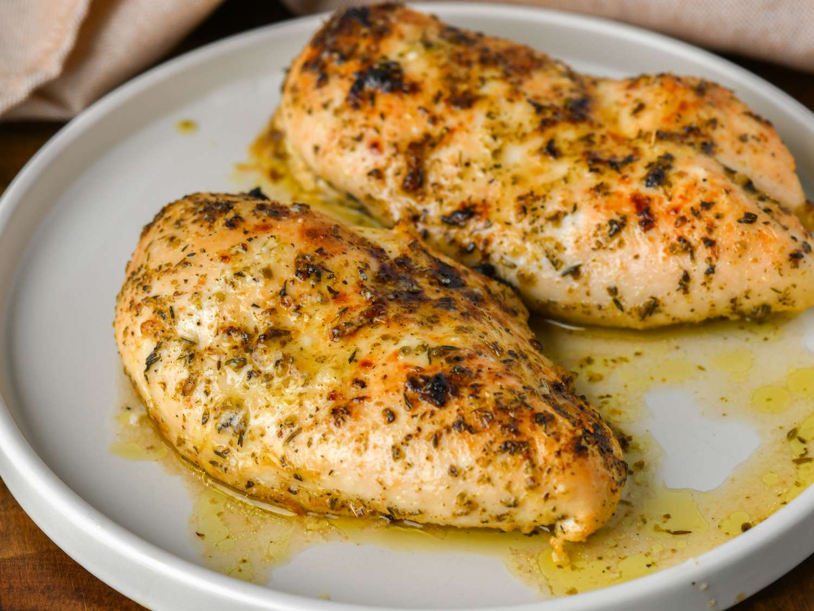

Home Page
My Favorite Chicken Breast Recipe

One of my go-to recipes that I make during the week because it is so easy to make.
The chicken breast gets marinated in Mediterranean flavors like lemon juice
, olive oil, and herbs. Then we will bake it in the oven.
Ingredients
- 2 (8 ounce) skinless, boneless chicken breasts
- Salt and freshly ground black pepper
- 1/4 cup olive oil
- 1/4 cup freshly squeezed lemon juice
- 1 clove garlic, minced
- 1/2 teaspoon dried oregano, or more to taste
- 1/4 teaspoon dried thyme, or more to taste
Steps for recipe
- Season chicken breasts with salt and pepper on all sides and place in a bowl
or lidded container. Combine olive oil, lemon juice, garlic, oregano, and thyme,
in a small bowl and pour marinade over chicken breasts. Marinate for 10 minutes
at room temperature.
- Preheat oven to 400 degrees F (200 degrees C). Set one oven rack about 6 inches
from the heat source.
- Place chicken breasts into a baking dish and pour marinade on top.
- Bake chicken on the middle rack of the preheasted oven untill no longer pink in the
center and the juices run clear, 35 to 45 minutes, depending upon thickness.
Move baking dish to the top rack and broil chicken untill well browned, about 5 minutes.
Home Page